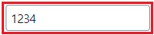
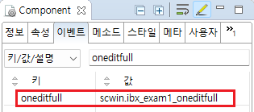

[Input] Event - oneditfull (입력값이 maxByteLength 설정값과 같을 때 발생)
1개요
Input의 'oneditfull' 이벤트를 설정한 예제입니다. 'oneditfull' 이벤트는 입력 값의 길이가 'maxByteLength' 속성의 설정 값과 동일할 때 발생합니다.
이 기능은 입력 값이 영문 또는 숫자이고, 'maxByteLength' 속성이 설정된 경우만 동작합니다.
2구현된 기능
'oneditfull' 이벤트 발생 시 로그 출력하기
3예제 테스트 방법
3.1'oneditfull' 이벤트 발생 시 로그 출력하기
예제 영역 'oneditfull 이벤트 설정'에서 테스트합니다.1
STEP 1: Input에 '1234'를 입력합니다.
Image 1.브라우저(Chrome) 실행 예시

2
STEP 2: 실행 결과를 확인합니다.
입력 값이 '1234'가 되면 'oneditfull' 이벤트가 발생하고, 'oneditfull' 핸들러에 작성된 스크립트가 실행됩니다.
예제 영역 '로그 확인'에 컴포넌트 ID와 value가 출력됩니다.
Example 1.Log
[12:46:39] **** oneditfull 발생 **** [12:46:39] 이벤트 발생 컴포넌트 ID : ibx_exam1 | 입력 값 : 1234
4구현 예시
4.1'oneditfull' 이벤트 발생 시 로그 출력하기
1
STEP 1: Input의 속성을 정의합니다.
[필수] maxByteLength="4"
입력 가능한 최대 길이를 지정합니다.
Image 2.웹스퀘어 스튜디오의 Component View - 속성 설정 예시

2
STEP 2: Input의 'oneditfull' 이벤트의 핸들러를 설정합니다.
예제 파일에서는 핸들러로 사용할 메소드명을 'scwin.ibx_exam1_oneditfull'로 정의하였습니다.
Image 3.웹스퀘어 스튜디오의 Component View - 이벤트 설정 예시

Example 2.Source
<!-- input 의 소스 본문 예시 --> <xf:input maxByteLength="4" ev:oneditfull="scwin.ibx_exam1_oneditfull" id="ibx_exam1"> </xf:input>
3
STEP 3: 'scwin.ibx_exam1_oneditfull' 메소드를 정의합니다.
Example 3.Script
//Input "ibx_exam1"의 oneditfull 핸들러 //입력 값이 영문 또는 숫자이고, 'maxByteLength' 속성에 설정된 길이와 같으면 발생합니다. scwin.ibx_exam1_oneditfull = function() { //로직 구성 //컴포넌트 ID 반환받기 //this.getOriginalID(); //컴포넌트의 value 반환받기 //this.getValue(); };
5주요 API
maxByteLength
oneditfull